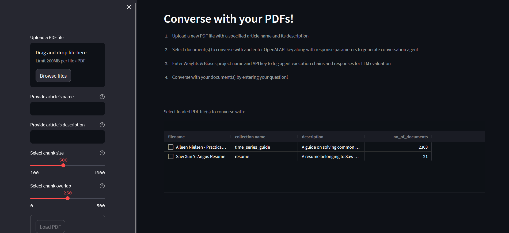

Conversing with multiple documents simultaneously via retrieval augmented generation and conversation agents
Try it on Streamlit!
Introduction
The aim of this project is to build a chatbot application that leverages the reasoning and logic of a large language model to enable a user to converse with multiple documents at once. The model converses with the user and answer their queries with respect to the documents that contain the relevant information and context required. As such, users can accurately and efficiently query multiple documents containing relevant information without having to search for it.
Tools/concepts used
- Vector Stores (Chroma)
- Text Embeddings
- Hugging Face
- GPT-3.5-turbo / GPT-4
- LangChain (RetrievalQA chains + Conversation Agents)
- Weights & Biases
- Prompt Tuning
- Streamlit
Design Overview and Features
The multi document chatbot was designed with the following considerations and features:
- Flexibility to converse with own private documents: Users using the chatbot will want to load and select which of their documents they would like to converse with. Having a feature that allows users to input new documents as well as the visibility of the loaded documents will provide users the flexibility of using the application for their own private documents.
- Generate responses in context of the documents: Within all the documents, the application will need to be able to find the answer or relevant context (if it exists) and use it to generate a response to the user. Retrieval augmented generation will ensure that the application is not hallucinating and that the chatbot will provide accurate and relevant responses.
- Dynamic searching of relevant document(s): Based on whatever the user queries, the chatbot will need to able to automatically and correctly identify what action to take and/or which document to search the answer or context from. This allows the application to not just require a predetermined call to search within a specified document for the answer.
With the considerations of features in mind, the following outlines the design of each component of the application:
- PDFs that are uploaded to the application will be split into smaller chunks called documents, and then passed through an embedding function to convert these documents into vector embeddings. These embeddings are saved in a vector store.
- Selected list of documents are then retrieved and are converted to database searches that search for documents which are semantically relevant and similar to the user's query. The database searches are then used to generate retrieval chains, which are a sequence of calls to perform question-answering over a given list of documents.
- Lastly, the chains are then used as tools to initialize a conversation agent which will help route the user's query to the correct list of documents to search the relevant context from to generate the response.
The next few sections will cover each component in greater detail, as well as the technicalities behind the processes in setting up the chatbot application
Embeddings and Vector Stores
When the user uploads a PDF file, a few steps are performed to process the file before it can be queried upon
Using a set of specified parameters, the document is split by character into smaller chunks of text. The "chunk size" and "chunk overlap" parameters can be adjusted to control the granularity of the chunks of text, as well as the context of information between the chunks.
Each chunk of text is then passed through an embedding function. An embedding function helps to convert textual data into vectors (eg sentence embeddings) which can be used for a wide variety of tasks, including similarity search to find sematically similar sentences. The embedding function used here is the Sentence Transformers all-mpnet-base-v2 model, which maps sentences to a 768 dimensional vector space.
The vector embeddings are then stored in a vector database using Chroma. Chroma is an open-source embedding database which provides tools to store embeddings and their metadata, and most importantly indexes embeddings to allow for quick and efficient similarity search. For this application, the vector database is persisted locally. It has a table which displays all persisted vector databases, showing the filename, collection name and description. This allows the user to keep track of which PDF files have already been uploaded to the application.
One thing to note is the name and description of the article when uploading the PDF file. The name should be a unique identifier for each article, which also acts as a identifier for the vector database. The description must also be clear in describing what the article is about and what it is useful for, as it will be used later on by the conversational agent to determine which tool to use (which will be elaborated later on)
Retrieval QA Chains
When the user selects the file(s) to converse with, various configurations are made available to generate the conversation agent. As part of the process to generate the agent, there is a step which involves creating the retrieval QA chains which function as the agent's tools. This section will cover the creation of these chains, while the later section covers the agent itself.
Using LangChain, an open-source framework for developing applications powered by language models, retrieval QA chains are created using each list of documents (file). Each chain has a retriever which searches the vector database for the top most semantically similar chunk of text via cosine similarity with the question. Here is an example of returing the top 3 text chunks from the relevant list of documents based on the query provided:
These text chunks are then used as context and inserted into a prompt template of the question-answering chain, along with the question itself. The template ensures that the language model generates a response by only using the provided context, also ensuring that the model does not hallucinate and provide helpful answers.
The prompt is then passed through the language model via a call to OpenAI's API to generate a response. The language model used here is gpt-4, which has a maximum token count of 8,192 tokens. To use the API, an OpenAI API key is required, and the cost of the query is dependent on the number of tokens per query. (Input: $0.03 / 1K tokens, Output: $0.06 / 1K tokens)
If more than one files are selected by the user to converse with, one retrieval QA chain is created for each file. Each chain has a retriever, a prompt template and a language model. Each will serve to retrieve the relevant chunks of text from their respective file to generate an accurate and corehent response.
Conversational Agents
Once the retrieval QA chains are created, the conversation agent is then created. In LangChain, an agent is a component that has access to a suite of tools, and based on the user's input can decide which tool to use. This enables the chatbot to be dynamic in using its ensemble of retrieval QA chains that it's provided with.
The agent type used in this application is a CHAT_CONVERSATIONAL_REACT_DESCRIPTION. This agent type is used with a memory component in order to account for historical responses when chatting with the user and generating new responses. This optimizes the agent in a conversational setting with the user.
An important characteristic of the agent is the ReAct framework that it uses to generate a response. The ReAct framework is a prompting strategy that combines chain of thought reasoning with action planning. Through this iterative framework, in each step, the agent follows a sequence of events to obtain an intermediate observation. This sequence of events is repeated until the final answer is generated from the language model and returned to the user.
- Question: An example question that will require multiple steps to answser
- Thought: Reasoning step which identifies how to solve the problem and what actions to take (thought 1, action 1, observation 1) -> (thought 2, action 2, observation 2)
- Action: External task that the model can carry out from an allowed set of actions (tools such as retrieval QA chains)
- Observation: Result of carrying out the action
An example of the prompt template used by the agent is as follows. Take note of the tools available to the agent, and also the description of each tool which helps the agent to decide what action to take to obtain the final answer and respond to the user's query. This description was created during the loading of the PDF file into the application.
As an example, creating a conversation agent that has access to two retrieval QA chains as tools, the user is able to receive a relevant response that depends on multiple PDF files, due to the ReAct framework used by the agent and dynamically determining what action to take for each step in generating the final answer.
Logging and Evaluating Responses
The queries from the user and responses generated by the conversation agent in each session can be logged to a Weights & Biases project under a specific run. Weights & Biases is an MLOps platform that can implement monitoring and tracing of LLMs over time in complex interactions.
In the Weights & Biases workspace for a specific run, the list of traces are displayed according to each prompt and response pair. Each trace comprises of the input, output and the overall chain used to generate the output, while their trace timeline view displays the detail of each step that the conversation agent took to get the result.
The view provides valuable insights on how and where specific chain(s) might have gone wrong, making it useful for debugging the conversation agent to prevent issues arising for future response generations. The view can also be used to improve the conversation agent and to make it more successful in generating accurate and relevant responses.
Future Improvements
- For the application to be fully productionized and to be able to accept large volumes of PDF files, the vector store can be run as a Chroma Server in a Docker container separately, creating a Client to connect to it, and then pass that to LangChain.
- Since the application leverages on OpenAI's gpt-3.5-turbo model, having a estimated cumulative cost calculator for each conversation session would provide the user visibility into how much cost is incurred.
- The application can be more specialized to query documents belonging to a specific domain or field (eg finance, career advisory, education etc). Adjusting the prompt template to make the responses more relevant to the domain or field would enhance the user experience and interactiveness.
- Besides retrieval QA chains, additional tools can be implemented when creating the conversation agent, such as a tool to search the web if necessary to generate responses that require information outside of the context of the PDF files.
- The chat history for each session can be exported to a csv file for future evaluation of the generated responses. On top of this, having a voting feature in the chat window will allow users to evaluate the responses in real time, and these voting results can be exported as well. The various parameters can then be adjusted accordingly as desired.